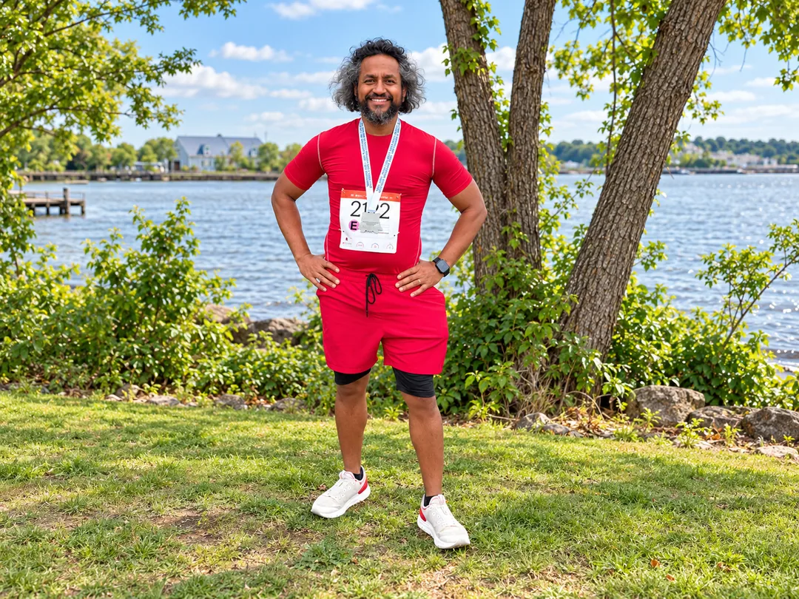
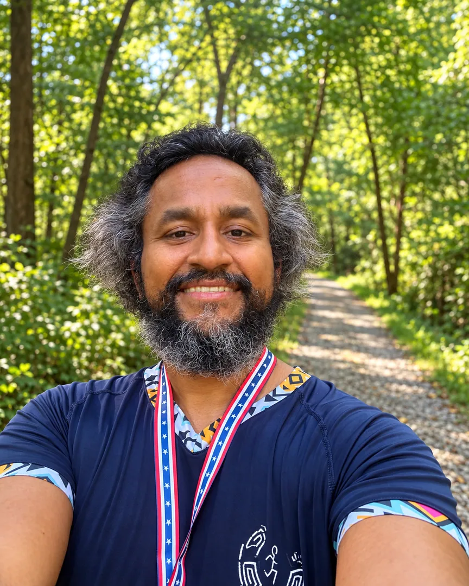
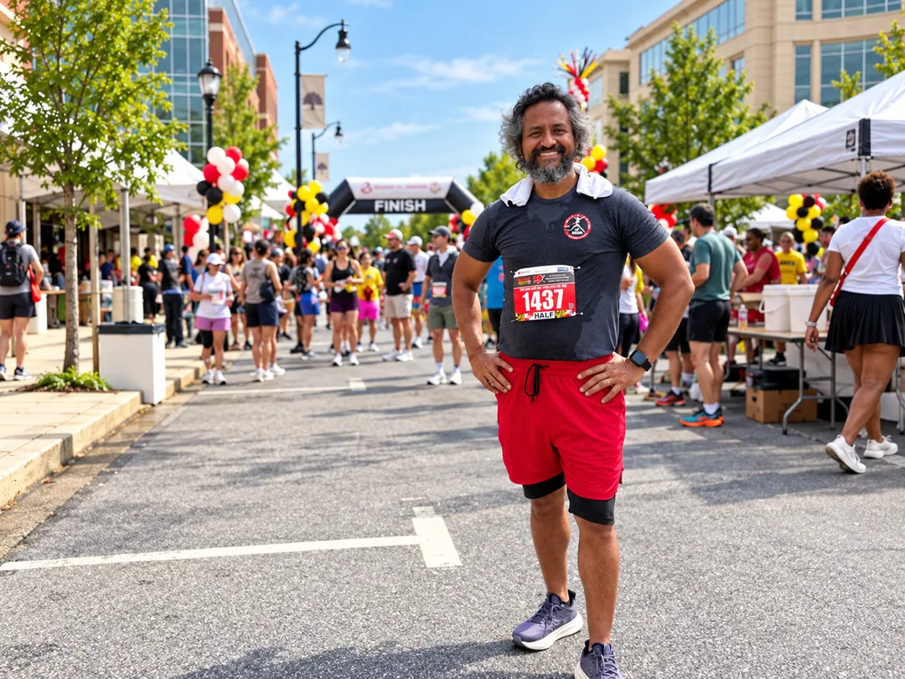
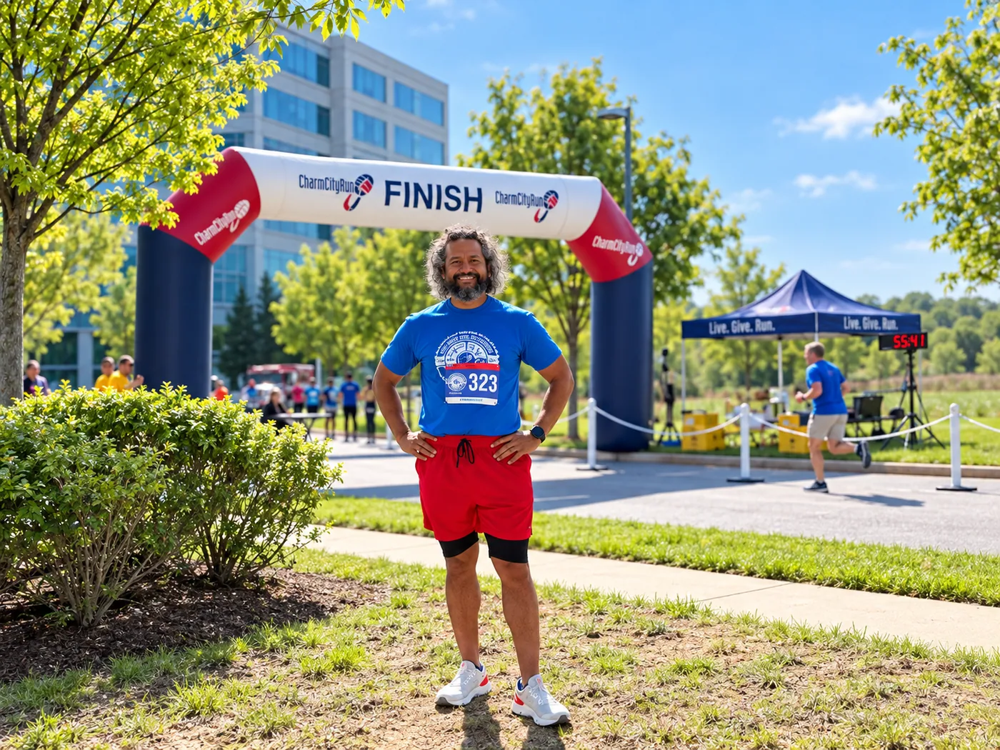
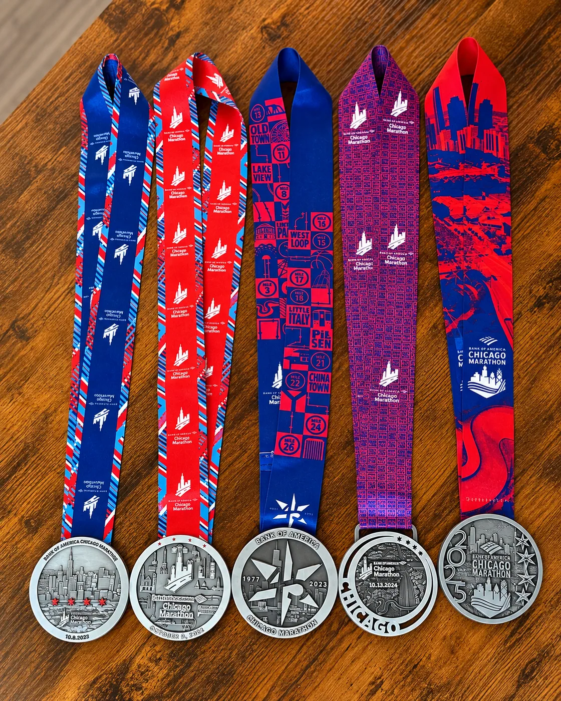
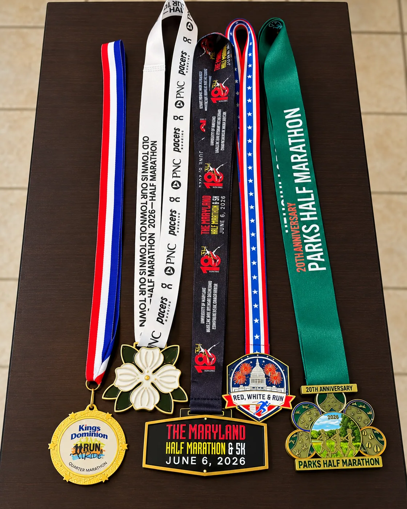

I'm keeping this simple: every gift goes directly to Jericho through its official donation page. This website does not collect payments or display an unverified running total.
One small favor: In the donation form’s optional Comment field, please write “Chicago Marathon 2026 — Chatterpaul” so Jericho can identify gifts connected to this run.
Jericho became part of my own healing, not just a cause I support.
I joined Jericho because I believed in its mission of bringing healing and human connection into prisons. What I didn’t expect was how deeply the experience would affect my own life.
In Jericho circles, inside prisons and beyond the walls, we listen, share, and do our own emotional work together. The labels start to matter less. What stays with me is how much we have in common: our struggles, our hopes, and our capacity to grow.
Jericho helped me through a difficult period and continues to be a place where I learn about myself. Running this marathon is my way of giving something back—and inviting others into that spirit of connection.
“I went to Jericho believing in the work. I stayed because I discovered how much I needed it, too.”

What is Jericho Circle Project?
Jericho Circle Project creates spaces for emotional healing, accountability, personal growth, and human connection with people inside prisons, returning citizens, and volunteers.
Jericho is not about volunteers going inside to “fix” someone else. Everyone in circle is invited to listen, be honest, and do their own work. That shared humanity is what makes it meaningful to me.
Donations are made on Jericho’s official website. This personal fundraising page does not collect money or payment details.
Donate Directly to JerichoTraining miles, finish lines, and a new chapter in the DMV.
Since moving to the DMV, I’ve kept up my daily walking and running—averaging about five miles a day this year. Here are a few of the races and moments that have carried me toward Chicago.



New places to run, familiar reasons to keep going.
The medals tell part of the story.
Five Chicago Marathons are already behind me. This year’s sixth is about more than a finish line—it’s a chance to support a community that matters to me.

Chicago Marathon history
Five Chicago finishes so far. Here’s to a meaningful sixth on October 11.

2026 DMV race season
Recent races near my new home—small milestones on the road back to Chicago.
Cheering me on? I'd love to hear from you.
Whether or not you're able to donate, a few words of encouragement mean a lot. Send me a private note—I’ll read it as I get ready for race day. Nothing is posted publicly.
26.2 miles. One shared humanity.
If you’re able to give, share this page, or simply send a kind word, thank you. I’m grateful to have you along for the miles ahead. All donations go directly to Jericho Circle Project.
Donate to Jericho— Chatterpaul